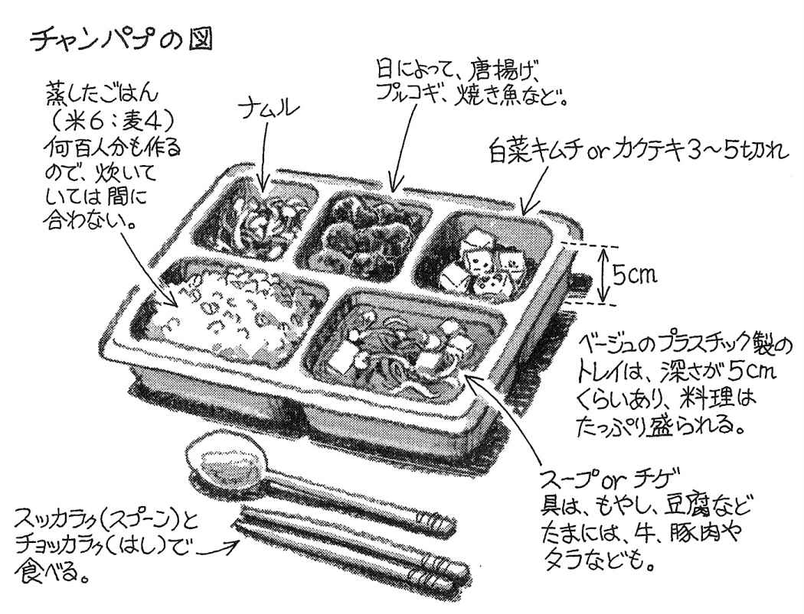

| 韓国徴兵、オレの912日 兵役体験をコミカルに綴る赤裸々ノンフィクション！ 軍事データコラム集 (impress QuickBooks) | |
| チュ チュンヨン & 中山 茂大 | |
| (2014) | |
目次
ご案内
本書は、本編『韓国徴兵、オレの９１２日 兵役体験をコミカルに綴る赤裸々ノンフィクション！』（http://amzn.to/VHoDDm ）より、韓国軍事データコラムを中心に抜粋し、再構成したものです。
文庫版まえがき
忘れもしない１９９５年３月24 日、オレは日本にやって来た。
日本ではその年の１月17 日に阪神大震災が、そして日本に来る４日前の３月20 日には地下鉄サリン事件が起きていた。母は、すでに支払っていた留学先の学費を捨ててもいいから、行くのをやめろと言った。だが決意は変わらなかった。オレにとって自分の国は狭かった。もっと広い世界が見たかったのだ。子供のころからずっと。
そしてソウルの実家を出る時、オレは10 年前のあの日を思い出していた。軍隊入隊のあの日を。訓練所にまで見送りについて来て、手をとり、涙を流しながら別れを惜しむ親たちが多い中、うちの母は息子が夕方また帰ってくるかのごとく、普通に「チャル カッタワ（行ってこい）と玄関で見送っただけだった。そして、韓国を発つその日も母は同じだった。昨日までやめろと言っていた人とは思えないくらい普通に、玄関口で要った。「チャル カッタワ」
軍隊（とサッカー）の話は、韓国の女性がもっとも嫌うといわれている。確かに武勇伝を語りたがるのが男というものだし、共通の話題なのだから、よく話に出てくるのは当然のことである。女性は除 け者にされたような気になるのであろう。しかし、それほど韓国の男たちが軍隊、軍隊と言っているわけでもないと思う。なぜなら、韓国では誰もが経験する当たり前のことであり、特別なことではないのだから。
だが日本に来て、ここでは、その軍隊経験が当たり前のことではないのだということを実感することとなった。自分が韓国人だとわかると「軍隊は行ってきたんですか」と聞かれたり、あるいは「えっ？ 韓国って兵役があるんですか？」と驚かれたり。この国に軍隊はないんだと頭でわかっていても、初めはどうにも落ち着かない気持ちだった。
平和。そう、この国は平和なんだ。韓国だったら軍隊に行っていなければならない年頃の若者たちが、バンドを組んでライブ活動をしたり、劇団を作って舞台をやったり。また、写真の道に進みたいものは専門学校に通ったり、早くからカメラマンのアシスタントについたり。やりたいことを実現するための下地を、若いその年頃にしっかりと築いている。ちょっと、うらやましくもあった。自分にあの２年半があったとしたら、どうだったろうか。
一方で、学校も行かず仕事もせず、やりたいことも見つからずに、もったいない時間の過ごし方をしている若者たちも、日本に来てたくさん見た。オレが君たちぐらいの頃は、きびしい軍隊生活の中で、ボオッとするヒマもなかったんだぞ。
平和。平和ってなんだろう。
やりたいと思うことができる世の中なのか。あるいは、何もしなくても適当に暮らしていける世の中なのか。もちろん、軍隊のある韓国が平和じゃないという意味ではないが、あくまでも休戦中なだけで、国家的には敵国となっている国のある韓国と、そういうもののない日本とは、明らかに違う。それを日本に来て、理屈ではなく肌で感じたのだった。
どちらがいい悪いと簡単に言える問題ではない。軍隊にいた２年半を悔いたこともないし、悔いても仕方がない。軍隊を讃 えるつもりも反対する気もない。つらいこともたくさんあったし、楽しい思い出もたくさんある。多くの人がそうであるように、あの会社に最初就職したから、今こんな仕事をしている、あの人にあのとき出会ったから今自分はこうある、と思っているように、あの２年半があったから、今オレは日本にいて、目指していたカメラの仕事をし、たくさんのすばらしい人たちに囲まれている。
そう、オレにとって軍隊は、やはり誰もが経験するような普通のことだったのだ。自然にそう思えるようになるのに数年はかかったろうか。
「チャル カッタワ」
母の言葉が10 年以上たった今でもときどき思い出される。普通のことなんだ。軍隊に入隊するのも、異国に旅立つのも、振り返ってみれば普通の日常の１ページ。母はそう言ってくれていたような気がする。
ここ数年の韓国の芸能人人気のためか、韓国に兵役があることを驚かれることも少なくなった。好きな俳優が軍隊に行ってしまうことを嘆くだけれなく、貴重な若い年頃の過ごし方の違う国が隣にあることを、一度は考えてみる機会にこの本がなればと思う。
平成18 年２月
チュ・チュンヨン
プロローグ 訓練所入所
「お前らは人間じゃねぇ！」
１９８６年９月、オレは陸軍議政府訓練所に入営した
１９８５年６月。ちょうどオレの19 才の誕生日のことだ。
大学生になってのほほんと暮らしていたオレの元に、１通の手紙が舞い込んだ。差出人は兵務庁。
封を開けると紙切れが１枚入っていた。要約するとこういう内容だった。
「今年19 歳になったあなたは一般国民として軍事訓練を受ける義務があります。そのために身体検査を実施しますので、いついつの何時に兵務庁に出頭し、必要な検査を受けてください」
身体検査の結果、オレは「１級現役」に認定された。その年、ついにオレは徴兵されることになったのである。オレは大学生だったので、申告すれば入営を延期することができる。韓国の大学生はだいたい３年生になる年に休学して入営するパターンが多い。また大学の１～２年で軍事教育を受けると入営期間が３ヵ月短くなる。オレの場合は当時、吹き荒れていた学生運動で大学を退学になったり、いろいろなことがあったので、身体検査から１年後の86 年の９月、陸軍議政府訓練所に入営することに決定した。
オレも、ああなるのか？
入営令状を持って朝９時にソウルの北にある議政府市の陸軍訓練所に行った。
前の日に頭を丸刈りにしたので、なんとなく人目が気になった。
軍の施設というのはどこでもそうだがバカでかい。高く長い灰色の壁がどこまでも続く。脱走すると捕まるという意味では刑務所と同じである。正門には憲兵ふたりがぴくりとも動かずに立っており、オレはわけもなく緊張した。
訓練所前の広場には数え切れないほどの若者と母親をはじめとした親族が詰めかけており、抱き合ったり手を握ったりして泣いていた。電器屋をやっていたオレの両親はまるで遠足に行く子供に声をかけるように「元気で行って来いよ」と言っただけで見送りとかそういうことはいっさいなかった。オレの家は韓国では特殊なのだ。母親は泣き崩れ、子供は不安げにきょろきょろとあたりを見回す。
軍隊がいかにひどいところか。
それはすでに徴兵を終えた先輩の地獄のような話から、みんなある程度は想像できたし、なによりも半年前に入隊した友人に面会に行った時に、その悲惨な状況は察せられた。チョコパイ３箱と鶏の丸焼きとジュースを３本差し入れに持って面会に行った友人のキムは、たった30 分の面会時間の間に、そのすべてをその場で食べてしまったのだ。
「あとからゆっくり食えよ」
と言うオレたちに、キムはこう言った。
「持って帰ると先輩に食われる」
ものすごい勢いで食べ物を口に入れていくキムを、オレたちはほとんどあっけにとられて眺めていた。それはまさに受刑囚に面会に行ったかのようだった。オレもああなるのか。 ９時ちょうどに、司令部から軍人が数人出てきた。
「入営の時間です。４列縦隊に並んでください」
オレたちは50 人くらいで適当に並んだ。この時までは軍人の言葉遣いは丁寧だった。
オレたちは社会に別れを告げ、親族に手を振られながら施設内を行進した。オレの隣には付き添って歩く軍人がいたが、不気味なことにそいつらは決してオレたちと目をあわそうとはしないのだ。軍帽を目深に被り、表情はまったくわからない。
正門からは司令部の大きな建物まで１００メートル近く続く大きな通りがあり、オレたちはそこを行進していった。軍の施設はわけもなくでかい。左手にはサッカーグラウンドが広がり、右手には広い駐車場とよくわからないが灰色の大きな建物が見えた。それとともに母親たちの声がだんだん遠ざかっていった。これから２年間続く地獄のような日々の始まりである。喉元から不安がこみ上げてきて足が震えた。徐々に小さくなっていく母親たちの声を、オレたちは後ろ髪を引かれるような思いで聞いていた。それは社会につながるたった一条の糸のようだった。そしてそれはオレたちが司令部の前を左に曲がった時に、ぷつりと切れてしまったのだ。
次の瞬間、横を歩いていた軍人たちの態度が一変した。
しゃ、社会の臭いっすか？
「停まれ！」
「おい、この野郎どもはなんなんだ？」
オレたちはビクリと足を止めた。オレたちの前には４人ほどの軍人が立っていた。
「お前ら、なにしに来たんだ、コラ？」
オレたちはおどおどと軍人を見上げた。やはり表情は見えない。
「お前らはなんなんだ？」
男たちは大股でゆっくりとオレたちのまわりを、まるで値踏みするように睨みつけながらゆっくりと歩いた。
「お前らは人間じゃねえ。軍人でもねえ。お前らいったいなんだ？」
「......」
「お前ら、生きて帰れると思うなよ」
オレはごくりとつばを飲み込んだ。
小便がちびりそうなほど縮み上がっているオレたちは、じっと俯 いたまま誰もが押し黙っている。
「お前らの命は、今日からオレたちが預かった。ぶっ殺してやるから覚悟しとけよ。オイ」
そう言いながら軍人がゆっくりと近づいてきた。そしてオレの斜め前の学生らしい男の襟をいきなりひっつかんだ。そして襟首に鼻をくっつけて、くんくんと臭いをかいだ。
「......お前ら、社会の臭いがするなあ......あ？」
軍人はゆっくりと言った。学生の青い坊主頭がぶるぶると震えていた。
「ここは、社会の臭いは禁止されているんだ。これからお前らの社会の臭いを消す」
軍人は怒鳴った。
「チョンブ（全員）、その場でパルクピョッピョギ（腕立て伏せ）50 回！ 実施！」
オレたちはその場で飛び上がって地面に伏せ、猛然と腕立て伏せを始めた。文句でも言おうものなら本気で殺されかねなかった。全員必死で腕立てを続ける。50 回できるやつの方が少なかった。オレの前の誰かがへたばってついに倒れた。
「なにやってんだ、テメー！」
軍人が大股で近づき、靴の裏でそいつの後頭部を踏みつけ、ぐりぐりと地面に押しつけた。
「だらしねえヤツは、こうなるんだ！ わかったか！」
オレたちはそれを見てさらに猛然と腕立て伏せを続けた。
なんというところだ。なんという恐ろしいところに来てしまったのだ！
「お前もできねぇのか、コラ！」
後ろの誰かが蹴り飛ばされたらしく、悲鳴が聞こえた。
大変なところに来ちまったぞ。マジで殺されるかもしれない。
オレたちは心の底からおびえた。
こんなものすごく恐ろしいところがこの世の中に存在したのか？ 今まで知らなかった。こんな恐ろしいことが......。
オレたちはほとんどぶっ倒れるくらいになって、やっと腕立てを終えた。
軍人のひとりがしゃがみ込んで、オレたちのひとりの坊主頭に鼻を近づけた。
「......まだ臭いがとれてねぇなあ」
軍人はゆっくりと立ち上がると言った。
「お前たちの社会の臭いを完全に落とす。トッキティギ（ウサギ跳び）で運動場１周！ 実施！」
オレたちは猛然とウサギ跳びを始めた。へたばったらなにをされるかわかったものではない。目立たぬように、遅れぬように、疲れぬように、オレは全員の真ん中くらいを飛び跳ねる。
「おら！ なにやってんだ、テメーは！」
最後尾でつんのめっている太ったメガネのやつを、軍人が蹴り上げていた。
「キサマ、死にてぇのか、コラ！」
軍人たちの注意がそっちにいっている間にオレはちょっと力を抜きつつ、これから始まるまさに夢も希望もない２年半の生活を、絶望的な気分で思い描いていた。
こりゃあマジで殺されかねないぞ。うまくやらないといけない。とにかく目立たぬように。出しゃばらないように。列ではいつも中くらいに。
それが初日早々にオレが肝に銘じた軍隊生活のコツだった。
ウサギ跳びのあとは匍匐 前進をさせられ、なんだったか忘れたが、ありとあらゆる筋トレをさせられた。途中で倒れると、容赦なくすねと膝 の裏側を蹴られた。内務房（兵舎）まで３分も歩けば着く距離を、オレたちは２時間もかかった。顔を殴らないのは痣 が残ってしまうからだというのは、あとになって聞いた。
「金持ちの息子の近くにいろ」
ボロ切れのようになって内務房にたどり着いたオレたちは、いくつかの小隊に分けられて、それぞれ内務房に連れて行かれた。内務房は平屋の建物で、同じものがいくつも並んでいる。内部は真ん中に通路が１本通り、左右が30 センチほどの段差になって靴を脱いであがるというスタイルである。いちばん奥はカーテンで仕切ってあり、そこが班長のスペースだ。オレたちは50 人ほどのグループで、その中にギュウギュウ詰めに座らせられた。教官がオレたちをぐるりと見回した。
「お前とお前とお前。髪が長い」
指さされた連中はビクッと身体を硬直させた。原則として入営前に髪を切ってこなければならないのだ。
「理髪兵のところで散髪。実施！」
髪の長い３人は教官のひとりに引っ立てられるようにして出ていった。
「これから本人の確認をする。名前を呼ばれたら大声で手を挙げるように」
「......」
オレたちはさっきの恐ろしい訓練で完全にびびっており、誰も声をあげる者はいなかった。
「わかったら『わかりました』と言うんだ！ コラ！」
「わかりました！」
「キム・ヨンス！」
「......は、はい」
「声が小せぇぞ！ コラ！」
「はい！」
そうやってひとりずつ名前が呼び上げられたあと、教官は言った。
「この中で父親が大企業の役員の者、大学教授の者、軍に勤務している者は手を挙げろ」 ５人くらいが手を挙げた。
「お前はどこの企業だ」
「Ｈ自動車です」
「役職は？」
「専務取締役です」
教官は書類に書き込んでいた。たぶんこいつらは手心を加えられるのだろう。軍隊では「いつも中くらいにいろ」というのと同様に、「いつも金持ちの息子の近くにいろ」というのが鉄則である。金持ちの息子はツライ当番に当たることはまずないので、その前後にいるやつはそいつと一緒にはずされることが多いからだ。オレは手を挙げたやつらの顔を必死に覚えた。
フルチンで検査
「これから各分隊に配属する。名前を呼ばれた者から外に出ろ」
名前を呼ばれた訓練兵たちはおどおどと出ていった。しばらくしてオレの名前が呼ばれた。外に出てみると、教官とおびえた顔をした数人が待っていた。
「お前がチュ・チュンヨンか」
「そうであります！」
そしてオレたちはとなりの内務房に連れて行かれた。そこで麻袋を手渡された。
「服を脱いでこの中に入れるんだ！ 実施！」
オレたちはパンツ一丁になり、脱いだ服を急いで麻袋に押し込んだ。
「全部脱ぐんだ、コラ！ 早くしろ！」
オレたちはただちにパンツを脱ぎ、袋に押し込んだ。
「麻袋を持ってとなりの内務房に移動！ 実施！」
オレたちは麻袋で股間をかくしながらコソコソと内務房を出た。外にはたくさんの訓練兵がいたが、オレたちを見て指さして笑う者などひとりもいなかった。
となりの内務房では教官が下着と訓練服を手渡していた。
「お前、身長は？」
「１７２センチであります」
「じゃあ５号。次、お前は？」
オレたちはそこで使い古されたヨレヨレの訓練服に着替えた。
次にオレたちがこれから６週間を過ごす内務房に連れて行かれ、そこで腕時計や現金などの所持品はすべて没収された。そして泥だらけの衣類と一緒に紙袋に入れ、自宅の住所を書かされた。
「これから支給品の受領に向かう。全員、運動場に移動。実施！」
運動場に出ると、机がいくつも並んでおり、そこで支給される戦闘服や靴、帽子、ベルトなどが手渡され、訓練兵の長い行列ができていた。どいつもこいつも怯えたような表情で、右も左もわからずおどおどしていた。オレたちもその中に加わる。
「お前！ 足は何センチだ！」
「26 センチであります！」
「ほれ！ 次！ お前！」
ひと通り支給品を受け取り、いったん内務房に戻ったオレたちは食堂に向かった。だだっ広い食堂にはオレたちと同じようなヨレヨレの訓練服の丸坊主がたくさんいて、むさぼるようにメシを食っていた。メシの内容は具のないみそ汁と、ごわごわの蒸し米とキムチとカクテキだった。オレたちは無言で食べた。あまりにまずくて残すやつもいたが、次の日には誰ひとりとして残すやつはいなくなっていた。食べることがここではほとんど唯一といってもいいくらいの娯楽だからだ。せきたてられるように食事を済ませ、内務房に戻ると通路に向かいあってあぐらをかく「待機」の状態で内務班長が来るのを待った。
班長が現れた。さっきここに来る前にさんざんしごいた男とはまた別の軍人だった。
「オレが今日からお前たちの内務班長を任されたチェという者だ」
内務班長はやはり帽子を目深にかぶっていた。
「これから６週間、お前らはこの議政府訓練所で生活することになる。そのための軍規をこれから説明する。よく聞け」
「わかりました」
「声が小せぇぞ！」
「わかりました！」
「軍人は命令で生きて命令で死ぬ。カラミョンカンダ（命令には絶対服従すること）！ わかったか！」
「わかりました！」
「オレがチンチンの皮をむけと言ったらむくんだ！ ハミョンテンダ（成せば成る）！ わかったか！」
「わかりました！」
「絶対に勝手な行動はするな。軍隊では個人行動はない。わかったか！」
「わかりました！」
「必ず報告しろ。ファジャンシル（化粧室）に行く時もだ。わかったか！」
「わかりました！」
その間、班長は決して誰とも目を合わせなかった。あとから聞いてみると新兵の教育係は全員そうらしい。目を合わせると精神が弱くなってしまい、厳しい訓練をさせることができなくなってしまうからだ。私情を殺して犬畜生と同じく新兵を扱うには情が移ってしまっては都合が悪いわけだ。
そうやってみっちり班長の訓示があり、その後ほんの少し自由時間があって、10 時に就寝した。オレたちはあまりに衝撃を受けたせいでしばらく立ち直れそうになかった。その日の夜、オレは気絶するように眠ったが、内務房のあちこちですすり泣く声が漏れ聞こえたという。本格的に厳しい訓練が始まったのは次の日からであった。
韓国軍事データ ①徴兵制度
韓国憲法第39 条「すべての国民は法律の定めるところにより国防の義務を負う」の規定により、韓国には徴兵制度がある。
具体的には兵役法に規定があり、
第３条（兵役義務）「大韓民国国民の男子は、憲法およびこの法律が定めるところにより兵役義務を誠実に遂行しなければならない」
第５条（兵役の種類）により、兵役は、
１ 現役 入営した兵、および職業軍人、士官学校生などがこれにあたる
２ 予備役 徴兵を終えた者
３ 補充役 現役服務ができるけれども入営していない者
４ 第１国民役 上記３つおよび第２国民役でない者
５ 第２国民役 現役服務は困難だが、軍事支援業務に耐えられる者
に分類される。
第６条では兵役義務賦課通知書の送達を規定しており、
第８条（第１国民役への編入）「大韓民国国民の男子は、18 歳から第１国民役に編入される」
つまり18 歳で兵役の義務が発生するのである。さらに、
第11 条（徴兵検査）「兵役義務者は19 歳になる年に兵役に耐えられるか否かの判定を受けるために地方兵務庁長が指定する日時および場所で徴兵検査を受けなければならない」
と定めている。身体検査の結果、軍医官により７等級に判定される。
第12 条（身体等位の判定）
１ 身体が健康で現役または補充役服務をすることができる者は、体格および健康の程度により、１級、２級、３級、または４級
２ 現役または補充役服務はできないが第２国民役服務はすることができる者は、５級
３ 疾病または心身障害で兵役に耐えられない者は、６級
４ 疾病または心身障害により第１号から第３号までの判定が困難な者は、７級
これにより、１～４級は現役、５級は第２国民役、６級は徴兵免除、７級は再検査となる。
さて、現役兵と認定された者は28 歳になる年までに入営しなければならず、拒否した場合は、
第86 条（逃亡・潜匿等）「兵役義務を忌避し、または減免を受ける目的で逃亡し、または行方を隠した時または身体損傷または詐欺行為をした者は、１年以上３年以下の懲役に処する」
懲役のあとはもちろん徴兵が待っている。だから忌避する人はいない。ちなみに15 年逃げ切ると時効だそうだ。
※参考「韓国ＷＥＢ六法」
韓国軍事データ ②徴兵の等級
韓国の男子は19 歳になる年に徴兵検査を受けるわけだが、その身体基準でいくつかに分類される。次の表の通りである。
このほか、身長１５８センチ未満と１９６センチ以上の者は無条件で免除される。
チュ氏の話では、この他に「頭が大きすぎてヘルメットが入らない」という人が免除になったり、子供が二人以上いると免除されたりするそうだ。基本的に徴兵は公平に行われるが、一部政府要人や財界の大物の子弟が免除されたりするというので最近問題になっている。
※「韓国百科」（秋月望著）を参照した。
韓国軍事データ ③自動小銃
チュ氏が入営した頃に韓国陸軍で正式採用されていた自動小銃は「Ｋ２」である。「Ｋ２」は１９８５年から導入されたが、すぐにすべての部隊に配備されたわけではなく、特に訓練所への配備は遅れたらしい。チュ氏が議政府訓練所で使用した小銃は、かなり使い込まれた訓練用の小銃であり、またフルオート射撃が可能であったことから「Ｍ16 Ａ１」である可能性が高い。「Ｍ16 Ａ１」はベトナム戦争時の１９６７年に米軍が正式採用した名銃である。また首都防衛司令部に配属されて以降、チュ氏に支給されたのは「Ｋ２」だったという。
Ｍ16 Ａ１主要スペック
●口径：５・56 ｍｍ
●全長：９９０ｍｍ
●銃身長：５３３ｍｍ
●重量：２８６０ｇ
●装弾数：20 ／30 発
●初速：９９０ｍ／秒
●速射速度：７５０～８５０発／分
●有効射程距離：２００ｍ
●小口径高速弾使用
韓国軍事データ ④Ｍ16 のマイナーチェンジ
ベトナム戦争を経験したＭ16 はマイナーチェンジを通して「ノントラブル銃」とまでいわれる名火器「Ｍ16 Ａ１」に成長する。具体的には、
●ストック（銃床）内にクリーニングキットを内蔵。
●腐食を防ぐためにチャンバー（薬室）内をクロームメッキ加工。
●銃のフロント部分がジャングルの枝に引っかかるためカゴ型に改良。
●閉鎖不良用ボルト強制前進装置を装着（ボルト閉鎖不良の欠陥が見つかった）。
●30 発弾倉も製造される。
などである。これにフルオート射撃が弾の浪費ということで３発ずつのセミオートに変更されるなどの改良が加えられ、現在のＭ16 Ａ２に継承されている。銃の照準を合わせる訓練所で支給された銃は訓練期間の終了と同時に返却されるが、配属後に支給された銃はその後除隊するまでの２年間以上、自分の銃として手入れをすることになるので、それぞれ非常に愛着が湧くという。
支給された銃はまず照準合わせを行う。標的に対して３発発射し、３つの着弾点を三角形で結び、その中心に照準を合わせる。上下は照星を、左右は照門のクリックを回すことにより照準を合わせることができる。
韓国軍事データ ⑤韓国の軍歌いろいろ
本文で紹介した以外にも有名無名の軍歌がいくつかあるので紹介しよう。
●『貴様と俺』
歌い出し 貴様と俺でなければ誰がこの国を守るのか～
『永遠なる男児』と並んで韓国人の男なら誰でも知っている超有名な一曲。
●『楽しい兵営』
歌い出し 大韓８道の男児が一つ所に集まれば、同じ家同じ家族、我らは兄弟～
「軍隊生活をエンジョイしよう」という苦しい内容。軍歌というかＰＲ曲。
●『我らは陸軍』
歌い出し 祖国を守っていく我らは陸軍。５千年受け継いできた民族の魂が～
チュ氏の記憶にもおぼろげながらあるという。海軍では、「陸軍」を「海軍」にかえてそのまま使うらしい。
●『我らが最高だ』
歌い出し 貴様も偉い、俺も偉い～
つい最近作曲されたもの。歌詞は歌い出しの通りかなり自画自賛。
●『駆歩歌』
歌い出し 山奥の霧のかかった道に沿って朝を開けてくれる男たちの歓声～
駆け足専用の軍歌らしいがチュ氏は聞いたことがないという。歌詞を読んでみるとどことなくホモっぽい。
●『軍人守則』
歌い出し 俺が倒れれば祖国も倒れる。前進あるのみ。
最初は軍歌らしく勇ましいが、途中からなぜかヒップホップに。意味不明。
●『同胞よ永遠なれ』
歌い出し 天地が振動し地殻が崩れる戦地にて 故国の神が見守ってくれるのだから何を恐れることがあろう。
万歳 万歳 万々歳 アリラン 万歳。
●『新しい千年を築いて行こう』
歌い出し 陽が昇る新しい朝、新しい千年が明ける～
希望に満ちた明日に向かって広い大地を走って行こう。
●『祖国がある』
歌い出し 祖国がある所に我らがいる。我らがいる所に祖国がある。我らがいる所に忠誠がある。
●『勇士忠情』
歌い出し 青い空の下、花咲く江山。繁栄の新しい地に夜が明ける。
韓国軍事データ ⑥陸軍５大訓練
韓国の軍隊では、その辛さから「５大訓練」と呼ばれるものがある。訓練所や部隊によって若干異なるようだが、チュ氏の体験によると以下の５つだそうだ。
①遊撃訓練 （この項目）
障害物のある訓練場を突撃しながら山を駆け上がり、高所に張られたロープを渡り、櫓からワイヤーを滑り落ちるなどの一連の訓練。とにかく体力勝負。訓練所では日常的に行われる。
②行軍訓練 （→第15 話）
１００キロの行程を完全軍装30 キロのフル装備で、28 時間で歩ききるという地獄の訓練。訓練所での有終の美を飾る究極の訓練である。
③化生訓練 （→第５話）
生物化学兵器に対抗するガス訓練だが、実際は松ヤニをいぶした小屋でひたすら煙に耐える。この訓練の辛さは除隊後も忘れられないという。
④冬期訓練 （→第18 話）
１月の山の中で雪壕を掘り、２泊３日そこで過ごすというもの。要するに寒さに耐えるだけだが、真冬の気温はマイナス10 度を余裕で下回る。
⑤射撃訓練 （→第３～４話）
実弾を使用する訓練だけに非常に厳しい。訓練自体は楽だが、教官は神経質で、ちょっとしたことですぐに殴られる。チュ氏は射撃は得意だったらしい。
韓国軍事データ ⑦チャンパプ（軍隊の食事）
チャンパプというのはハングルで蒸したご飯の意。転じて軍隊の食事のことを言う。
「お前、チャンパプどれくらい食ったんだ？」というセリフは、日常的によく使われる。軍隊でどれくらいの期間、飯を食っているのかという意味で、要するにそれで上下関係が決まる。同期でも１週間単位で入隊時期が違ってくるので、「米つぶ何粒分、オレの方がエライ」などという、細かな上下関係が決められるのである。
チャンパプは、入隊当時はまずくて誰もが残すが、２～３日もすると、本文のように唐揚げひとつで文句を言うようになるという。
日本の自衛隊でも「金曜カレー」という言葉があるように、韓国でも金曜日は特別なメニューが組まれている。若者に人気のチャジャンミョン（ジャージャー麺）、ラーメン、カレー、あるいはリンゴ、バナナなどの果物も出る。上兵以上になるとＰＸで買ってきたチューブ式のマイ・コチュジャンを持参するが、新兵および訓練兵には望むべくもない贅沢なのであった。

韓国軍事データ ⑧軍隊でよくあるヨルチャリョ（罰）
●蚊の晩餐
パンツ一丁で外に立たされる。夏は蚊に刺され、冬は寒さに耐える。最も非建設的な体罰のひとつ。
●セミ
木や柱など、どこでもいいからしがみつき、セミの鳴き声をまねる。
●飛行機
腹のあたりにヘルメットを置き、その上で両手足を広げて、というか宙に浮かせて寝る。これを上官が回すと「ヘリコプター」に。
●手榴弾
上官が「手榴弾！」と叫ぶと即座に飛び起きて床に伏せる。あるいは「寝床に手榴弾！」と言うと通路に飛び降りて伏せる、というのを繰り返す。
●17 番（あるいは27 番）
足上げ腹筋の体勢である程度の時間を耐える。体操の17 番目（あるいは27 番目）のメニューなのでそう呼ばれている。
韓国軍事データ ⑨女軍について
韓国では女性は志願兵制である。１９５０年９月に、当時釜山まで攻め込まれた韓国軍が女子義務軍教育隊を創設したのが始まりである。その後、陸軍女軍課（51 年）から女軍部（54 年）、女軍処（59 年）と昇格して１９７０年女軍団となった。任務は主に情報収集、探索活動、宣撫 工作、心理戦放送、一般事務などである。88 年から出産が許可されたという驚くべき情報もある。２００２年10 月に男女統合の教育方針により、女軍学校は閉鎖されたが、現在までに７８００人あまりの士官、将校を輩出している。２００２年３月には、第58 期陸軍士官学校の卒業生として、史上初の女性将校20 人が誕生した。
韓国軍事データ ⑩夜間哨戒
夜間の哨戒は１時間ごとの当番制である。午後10 時の就寝から午前６時の起床までの８時間、兵舎の入口に各１名が配置されるので、１時間に２名ずつ、朝までに16 名が交代で勤務する。１分隊20 名程度なので、毎日４名程度がこの勤務を免除されることになる。
哨戒にあたっては毎日暗号が決められる。例えば「ジャガイモ」「サツマイモ」、あるいは「パン」「米」、「トラ」「イーグル」などである。
誰何（すいか）の方法は事前に細かく指導される。
韓国軍事データ ⑪訓練所の給食
韓国軍では兵士の１日の摂取カロリー基準を３８００キロカロリーとしている。普通成人男子の１日に必要とされるカロリー量は２５００キロカロリーといわれているので、かなり多いことがわかる。米飯は量の選択が可能、副食は毎回４品と定められている。現在では以下のように若い人たちにあわせたメニューが組まれている。これは最近のデータであり、チュ氏が徴兵された頃はこれほど恵まれたものではなかったことはいうまでもない。このデータを見たチュ氏はかなりうらやましそうだった。
ハンバーガー：月７回
メンチカツ：月５回
魚フライ：月３回
ソーセージ：月４回
野菜サラダ：月５回
唐揚げ：月４～５回
牛プルコギ：月３回
豚プルコギ：月３回
特別食、デザート、間食
トリの水炊き：年６回
モチスープ：年14 回
アイスクリーム：年48 日
ジュース：年１４２日
果物：年１３９日
飲料水：年36 日
牛乳：１日１本
カップメン：月６回
乾パン：月４袋
韓国軍事データ ⑬韓国の国防目標政策
２００１年度の防衛白書によると、韓国は首都ソウルがＤＭＺ（非武装地帯）から40 キロの至近距離にあるという防衛上の弱点を持つ。従って北朝鮮を依然として「主敵」と認識しているが、近年は「生存権を脅かすすべての外部の軍事的脅威を含む」とし、国内総生産の２～３％を国防費として投入している。このような状態での韓国の国防政策は、
①北朝鮮の脅威に重点的に備える国防政策から、北朝鮮のみならず将来の不確実な脅威にも同時に備える。
②能力に基づいた国防発展を追求することで、国力に見合った防衛力を整備する。
③対外的軍事関係を強化し、２国間または多国間の戦略的協力関係を構築する。
としている。対北朝鮮シフトから移行したのは、同時テロなどの影響もあるんだろう。
韓国軍事データ ⑭韓国軍の階級
一般の現役兵は訓練兵として６週間の訓練期間を終えた後、二兵として各部署に配属される。その後おおむね半年ごとに昇進し、30 ヵ月後に兵長の位で除隊する。軍全体の階級は以下の通り。
訓練兵 （階級章なし。問題外） →二兵→一兵→上兵→兵長（兵役終了時）
【士官クラス】下士→中士→上士→元士
【尉官クラス】准尉→少尉→中尉→大尉
【領官クラス】小領→中領→大領
【将星クラス】准将→少将→中将→大将→元帥
なお、徴兵期間は徐々に短縮され、２００４年６月現在、陸軍では24 ヵ月となっていて、さらに２ヵ月減らすことも検討されている。
韓国軍事データ ⑮完全軍装
毛布２枚、予備戦闘靴１足、軍用折れスコップ１個、個人用テント、テントの支柱12 個、予備戦闘服１着、ハンカチ２枚、飯ごう１個、フォーク付きスプーン１個、ポンチョ１着、靴下３足、ランニングシャツ３枚、パンツ３枚
行軍訓練の時は本来携帯すべき食料はもたなくてよい。ちなみに携帯食はアルファ米、真空パックのキムチなどだそうだ。さらに冬期の場合は毛布１枚に寝袋が支給される。
韓国軍事データ ⑯韓国陸軍の精鋭「カチューシャ」
在韓米軍（８軍）の各部隊で米軍とともに生活をしながら任務を遂行する韓国陸軍所属の要員を通称「カチューシャ＝ＫＡＴＵＳＡ（Korean Augmentation To the United States Army）」という。
米軍基地での勤務のため英語必須。入営前に試験がある。９月に１次選考、11 月に最終選考を経て、入営は翌年。
受験資格は19 歳以上26 歳以下で最終学歴が高卒以上、身体等級３等以上、ＴＯＥＩＣ・６００点以上もしくはＴＥＰＳ・５５０点以上の者。選考は１度だけ。競争率は２・７倍である。米軍基地内は映画館やファーストフードなどなんでもそろっていて、一般の部隊と比べるとまさに別世界であり、勤務内容も一般兵と比べてかなりラク、英語の勉強にもなり、さらに米軍女性のガールフレンドもできるとあってカチューシャの人気は高い。
ＪＳＡ（Joint Security Area＝共同警備区域）と呼ばれる北朝鮮との国境にもこのカチューシャが配属されている。彼らは、警備中は直立不動のまま微動だにしない。急に動いたりすると北側を刺激するので、ほんの少しの動作も厳しく禁止されているそうだ。さすがに１時間交代で、それぞれ15 分の休憩があるという。ＪＳＡ勤務の韓国軍兵士は、英語堪能であることに加えて、身長１７５センチ以上、親族に離散家族がいないことなどの条件を満たした兵士のみが配属されるので、韓国女性の理想の結婚相手だそうだ。
韓国軍事データ ⑰軍隊の悪口雑言
日本は世界でも珍しいほど他人を罵倒する言葉が少ない民族といわれているが、韓国は世界の平均並（以上か？）には罵倒語が発達しているようである。特に軍隊では気合いを入れる意味もあって、日常的にこれらの罵倒語が使用される。代表的な罵倒例を挙げてみよう。
「テガリルルタッチョゲガジゴ、ネールルポバソ、ハイタイロ、シソボリルカブダ！？」
（脳みそ取り出してハイターで洗ってやろうか！？）
「ヌンカレモンムル、チョッペポリルカブダ！？」
（目玉の黒目の墨を抜いてやろうか！？）
「テナムロ、トンクモンブト、イプカジ、パクチルロポリルカブダ！？」
（竹でケツの穴から口まで刺してやろうか！？）
「チャジルルチャルラソ、ソーセージチョロム、クオポリルカブダ！？」
（チンポコ切ってソーセージみたいに焼いてやろうか！？）
「ヌンテンイルルファッポバソ、ケーハンテ、モギョボリルカブダ！？」
（目玉をえぐり出して犬に食わせてやろうか！？）
これらの前後や中間に、
「ケーセキ」（犬の子供）
「シーバルロム」（体を売る男性）
「ジョッカットゥンセキ」（チンポコ野郎）
などの修辞語が挿入されて様々なバリエーションが形成されるのである。
なお、これらの文章を実践的に使用することは、著しく人間関係を損ねる可能性が高いので、十分な配慮が必要であることは言うまでもない。
韓国軍事データ ⑱板門店の謎
板門店の謎その１ 世界最大の国旗掲揚台 旗の重さは２７０キロ！
北朝鮮の国旗掲揚台は１６０メートルで世界最高。一方韓国側には１００メートルのものがある。高さ競争の結果、最終的に現在の高さに落ち着いたそうだ。旗の大きさは横30 ｍ縦14 ｍで、重さは２７０キロもあるという。また付近の送信塔は、妨害電波で南側のラジオ放送を聞こえなくしている。
板門店の謎その２ 北朝鮮側の「宣伝村」
北朝鮮側の国旗掲揚台のふもとには、文化住宅らしい５階建てのマンションがあり、「キジョンドン（気静洞）村」と呼ばれている。韓国側の「自由の村」からは１．８キロしか離れていない。１９８２年に建設されたが、「一度も洗濯物が干されたことがない」などの理由から、住民がひとりも住んでいない「宣伝村」ではないかといわれている。実際には偵察兵などが潜んでいるという。
板門店の謎その３ 韓国側の「自由の村」
ＤＭＺ内には韓国側で唯一民間人が住む「自由の村」がある。この村では30 世帯、２５０人が生活している。税金、徴兵が免除され、年収は１０００万円。しかも軍の監視下なので絶対に泥棒に入られる心配がない。しかし11 時消灯、年間８ヵ月以上村から出てはいけない、村から出ると監視兵につきまとわれるなど、生活には一定の拘束がある。この村に住むには嫁に行くか入り婿になるしか方法はない。
韓国軍事データ ⑲「南侵トンネル」の発見
北朝鮮は「先軍政治」を国家の基本政策として標榜している。これは「軍事先行の原則に立って革命と建設に提起されるすべての問題を解決し、軍隊を革命の柱として前面に出し、社会主義偉業全般を推進する領導方式」であるという。国家予算に占める軍事費は15 ．４％となっているが、実際は30 ％以上といわれる。北朝鮮では人口の約５％が現役の軍人で、兵力の３分の２をＤＭＺ付近に展開している。
北朝鮮の南侵トンネルはこれまでに４つ発見されており、それぞれ全長１６３５～２４９６ｍ、深さ45 ～１６０ｍにおよぶ大規模なものである。トンネル掘削は１９７２年５月から金日成の指示で始められたという。第３トンネルはソウルからわずか44 キロの地点にまで達していた。また第４トンネルの発見によって、北朝鮮の全戦線にわたってトンネルの掘削作業が行われていたことが明らかになった。
最近の北朝鮮による南侵事件は、98 年６月に日本海岸墨湖近海で、北朝鮮潜水艦による領海侵犯事件、98 年12 月に北朝鮮潜水艇が韓国南岸に侵入し、韓国軍がこれを撃沈。99 年６月と02 年６月に黄海沿岸沙串で北朝鮮警備艇と韓国警備艇による銃撃事件などがある。
韓国軍事データ ⑳南北朝鮮分断の経緯
１９４５年８月15 日の終戦の後、朝鮮半島は米ソの進駐により、38 度線を境界にした信託統治が始められた。１９４８年８月15 日、南朝鮮では民主主義国家「大韓民国」が樹立され、北朝鮮では同年９月９日、金日成を中心とした共産主義国家「朝鮮民主主義人民共和国」が樹立された。
１９４９年６月、駐韓米軍が撤収してちょうど１年後、１９５０年６月25 日午前４時、北朝鮮軍は突如、南侵奇襲作戦を強行した。戦車を先頭に侵攻する北朝鮮に対して、韓国軍は１台の戦車もなく、３日目にソウルが陥落。１ヵ月後には釜山周辺以外の全地域が共産主義の支配下に入った。国連は緊急安保理を開催し参戦を決意。ダグラス・マッカーサー元帥を国連軍最高司令官として仁川上陸作戦を敢行。１９５０年10 月１日には38 度線を回復し、さらに鴨緑江まで進撃し形勢を逆転。その後、中国の参戦により戦況は膠着。
１９５３年７月27 日、３年１ヵ月と２日間の戦闘の後、休戦協定が締結。現在の１５５マイルに及ぶ軍事境界線（ＭＤＬ）とその南北それぞれ２キロの非武装地帯（ＤＭＺ）、板門店共同警備区域（ＪＳＡ）が策定された。以後半世紀にわたって南北分断状態が続いている。
３年間の朝鮮戦争で韓国軍、国連軍の犠牲者は48 万名、民間人の犠牲者は４５０万名にのぼり、当時の韓国全人口の15 ％が犠牲となった。
２０００年６月13 日、金大中大統領と金正日総書記による半世紀ぶりの首脳会談が実現した。
エピローグ／中山茂大 （企画構成）
板門店（ＪＳＡ）と非武装地帯（ＤＭＺ）
板門店は、ソウルから北西に62 キロ、平壌から南に２１５キロに位置する、わずか８００メートル四方の地域を指す。正式名称はＪＳＡ（共同警備区域）。文字通り、北朝鮮軍と韓国軍、国連軍が共同で警備する区域である。この世界で最も軍事的緊張が高い境界線が策定されて、すでに50 年以上が経過した。
チュ氏が軍隊に入営した80 年代後半は全斗煥政権（80 年～88 年）下で、朴正煕 大統領から続く軍事政権に対する民主化運動が過熱していた時代だった。80 年に起きた光州事件（全斗煥が指揮する軍と、全羅南道光州市の群衆が衝突。軍が発砲し多数の死傷者を出した）以来、学生たちは連日デモを行い、反政府運動が激化していた。学生の中には共産主義に傾倒する者も多かった。83 年に北朝鮮による全斗煥元大統領暗殺を狙ったラングーン事件が起こったが、国内の混乱の方がはるかに大きかった。北朝鮮の脅威は、韓国の経済発展とともに徐々に希薄になっていったのである。
ＪＳＡ内では84 年に事件が起こった。北朝鮮側からロシア人の記者が突然軍事境界線を越えて亡命したのである。北側の警備兵17 名がそれを追って境界線の南１５０メートルまで侵入し、約30 分間に渡って銃撃戦が行われた。この結果、韓国側のチャン・ミョンギ一兵と北朝鮮兵士３名が死亡した。一兵というと、配属されてまだ１年足らずの新米兵士である。チュ氏が入営する２年前に、このような悲惨な事件が起こっていたのだ。
ＤＭＺに配属された軍人の話
映画『ＪＳＡ』でもあるように、板門店の兵士は実弾を装備しており、上官の命令がなくても発砲することを許されている。「ＭＰ」の腕章をつけているのはそのためである。
配属された兵士は、北朝鮮の侵攻に怯えながら日々過ごしているのかと思ったら、実はそうでもないようだ。実際にＤＭＺに配属された軍人の話では、緊張しているのは最初の３ヵ月くらいで、あとは徐々に慣れていくのだという。コワいのは北の侵攻ではなく、寝過ごしてパトロールに遅れたのを見つかった時の中隊長と、それからオバケだそうだ。
深夜の真っ暗闇の中を、軍事境界線のフェンス沿いに軍用犬を連れてトボトボと歩く。不審者を見つけると、３度誰何 して、それでも返事がなければ発砲してもよい。
ある時、いつも通りパトロールしていると、草むらでガサガサと音がする。３度誰何しても返事がない。彼は恐怖のあまり、顔をそむけて、しっかり目をつぶり発砲した。銃声を聞きつけて、みんなが駆けつけると、それは牛だったそうだ。付近の農家が放牧していたのだ。結局、農家には軍で弁償することになり、牛は兵舎に持って帰ってみんなで食ったという。
また、当時は歩哨兵がパトロールをしていると、北側が拡声器で呼びかけてきた。
「○×一兵、メシを腹いっぱい食わせてやるから、投降しろ」
監視所はお互いに監視されているわけで、誰が何時にパトロールに出るのか、すべてわかっているのだ。映画『ＪＳＡ』のように、北と南の兵士が出くわして小競り合いが起こるというのは、年に１度あるかないかのきわめて稀なケースなのだという。
しかし、最前線に配備されている関係で、射撃訓練は頻繁に実施され、他の部隊よりも多くの実弾が支給される。支給された実弾はすべて消化しなければならないが、仕事に追われていると射撃訓練に行きそびれて、たいがいの兵士は弾が余ってしまう。そうすると、後輩の兵士は実弾を押しつけられ、仕方がないから適当にぶっ放してくるんだそうだ。
ＤＭＺ内は非武装なので、武器の携行は最小限に制限されている。では非武装ではないではないかという話になるが、自衛のための武器は認められているらしい。支給されるのは自動小銃、手榴弾などである。これはＪＳＡになると機関銃など兵器のレベルがあがる。さらに下った「民間人統制線」までのエリアになると、迫撃砲などの火器が配備され、戦車や、もっと大がかりな武器は、そのさらに南に配備されているようだ。
映画『シルミド』を観て
日本でも公開された『シルミド』をソウルで観てきた。
金日成 暗殺のために仁川沖の「実尾島（シルミド）」に集められた死刑囚が、死ぬほどツライ訓練に耐え、軍人として成長していくという話である。全編を通して女性がほとんど出演しないという、かなりマッチョで汗くさい映画なのであるが、軍隊生活がいかにキビシくツライものであるのか、チュ氏の話を聞いただけでは実感できなかった部分がかなり盛り込まれていて、とても興味深かった。軍隊の生活は娯楽というものがまったくない。「軍隊の５分は社会の１日」という言葉の意味がよくわかった。
映画では、素人の囚人たちが、数年後にはエリート軍人にも劣らない優秀な特殊部隊に成長して、まるで自分もその仲間にいるような気分になり、なんとなく一緒に一人前になった気分になった。
この映画の感想を、チュ氏は「やはり軍人は軍人であって、人ではない」と言っていた。
シルミドに集められた連中は罪を犯した囚人であって、要するに「死んでもいい人間」である。国にとって利用価値があるから生かしておいているだけなのだ。映画では彼らに対する国家、軍隊の非情さが際だっている。しかし、チュ氏が経験した悲惨な軍隊生活も、実態はたいして変わらない。軍隊とは国家に奉仕するだけの滅私奉公なのである。
軍隊は国家にとっては、タダ同然（当時の月給８００円）で動員できる大量の労働力であり、非常に有益なものだけれど、個人にとっては得るものはなにもない。軍隊には行きたくないけれど、義務だから仕方がないと割り切るしかない。韓国では軍隊に行くのが当たり前なのである。
だから、日本人がなぜ徴兵とか軍隊生活に興味を持つのか理解できないという韓国人も少なからずいる。彼らにとっては、軍隊に行くことは国民として当然のことだし、たいがいは、すでに過去のことで、今さら話してもなんの意味もないことなのだ。もしも日本人が韓国人に、「軍隊に行ってよかったですか？」と質問をしたとしたら、彼らの返事は、表面上は肯定的なものばかりだろう。そんな質問をするのは、私たちが軍隊を体験したことがない国民だからで、一度でも軍隊に行ったことがあるのなら、（そんな質問自体をするわけがない）（カッコ内傍点）のだ。
彼らにとって軍隊はあくまで「国民の義務」であり、それ以上のものではあり得ない。だから同じ内務房の同期でも、除隊するとほぼ二度と会うことはない。軍隊でどんなに親しくなっても、それはあくまで軍隊という特殊な状況の中だけのことで、社会に出るともっと親しい友達がいるのだ。だからチュ氏も、本文中の「チンピラ」や「おじさん」には二度と会っていない。従って、彼らの行方も不明である。
本文にもあるけれども、韓国人の男性の酒飲み話は「軍隊で始まってサッカーで終わる」のが一般的だ。しかし、それも若いうちの話で、ある程度トシをとると、軍隊のことなど忘れてしまう。若い頃に経験した、遠い過去の「懐かしい」思い出なのである。
徴兵されて、そのまま職業軍人として軍隊に残る人も確かにいるが、それは除隊後の就職活動や、そのほかの面倒なことを考えたうえのことで、あくまでも消極的な選択の結果なのである。
それにしても、本文にもあるように、軍隊で培った忍耐と連帯感は、韓国人男性の意識を大きく変え、よくも悪くも除隊後の生活を変える。軍隊を経験することで韓国の男性は成長し、「一人前」として社会で認められる。
強烈な連帯感と倫理観（軍規）をたたき込まれ、それに従わないことは許されないという現実を、すべての若者は直視しなければならならない。若者は戸惑いつつも、現実を受け止める包容力のようなものを自然と身につけるのだろう。引きこもりは許されず、食べ物の好き嫌いも、変態的な嗜好も許されない。すべての「わがまま」が強制的に「矯正」されるのである。社会に適応するための「荒療治」のような側面もあるのかもしれない。
しかし、その陰で、毎年何人かの兵士が自ら命を絶っている事実も見過ごすことはできない。あまりに厳しい軍隊生活に耐えきれない若者が、世の中には間違いなくいるとこともまた事実なのである。
一度行くのはいいかもしれない。
でも二度と行きたくない。
このちょっとハードな体育会系的軍隊生活。あなたならどう思われるだろうか？
文庫版解説――中山茂大
インドには韓国人旅行者が多い。特に１月、２月は韓国の大学の冬休みにあたるそうで、日本人よりも欧米人よりも、韓国人旅行者が圧倒的に多いのである。主な観光地には、ほとんど必ずハングルの看板があり、私が歩いていると、
「アニョハセヨー」
「オディガヨー（どこへ行くの？）」
と声がかかる。さすが商売に長 けたインド人は、すでに韓国語をマスターしつつあるようである。そして私たちが日本人だとわかると、
「おー、ジャパニね。アリガトウゴ（ジャ）（カッコ内傍点）イマス！」
すかさず日本語に切り替わるのである。（ヒンディー語には本来「ザ行」の発音がなく、「ジャジュジェジョ」になってしまうそうである。この点はハングルとまったく同じで興味深い）。
２月からは、今度は日本人旅行者がぐっと増えるので、あのハングルの看板はすべて日本語のものに置き換えられるのかもしれない。見事な衣替えである。
そんなことでインドではたくさんの韓国人旅行者と会うのだけれど、彼らを観察しているうちに、
「彼はまだ軍隊に行ってないな」
「あの彼はもう終わっているかもしれないな」
と、なんとなくわかるようになってきた。
つまり、あまり周囲を顧 みないで大声で騒いでいるのは軍隊に行っていない学生、そういう学生をたしなめているのが軍隊に行った学生なのである。
私が日本で会った、徴兵を終えて来ている何人かの韓国人留学生と比べても、そこにはかなり明瞭な区別があるような気がする。それは要するに、彼らの持つ「大人びた雰囲気」や、逆に「子供っぽさ」に起因するのだろうと思われるのである。
一度だけバーラーナシーで、そんな韓国人学生と話をする機会があった。
彼は大学のサークルの友人たちと20 人ほどのグループを作って旅行しているということだった。とても物腰の柔らかい青年で、はにかんだような笑顔が印象的だったのだが、私は彼がすでに兵役を終えていることを直感した。彼の落ち着いた態度から、間違いなく軍隊を経験して「大人との接し方」を心得ていると感じたのである。
本編にもあるけれど、「軍隊に行くと変わる」というのは、彼の内面的な成長を物語っている。観光地でわいわいと騒いでいる他の学生とは違う彼の落ち着きは、状況を冷静に判断する姿勢を備えているように思えた。
韓国人旅行者はおおむね数人から十数人のグループで旅行していることが多いようで、しかも女の子が多いのが特徴である。男の子は数人の女の子の用心棒的に、ひとりふたりが一緒について歩いていることが多い。しかし地元のインド人に言わせると、「彼らはいつも自分たちだけで騒いでいるから、あまり好きじゃないよ」
とのことである。
確かにそんな彼らを見ていると、ソウルの学生街、新村 あたりで飲んだくれている学生たちを、そのままインドに持ってきたような気もする。そしてそんな学生たちと、いまこの時間も青瓦台の警備をしている機動隊員が、実は同じ世代の若者であるという事実は非常に興味深いのである。
軍隊は「没個性性」」が要求される、いわば「顔のない集団」である。その没個性的な集団の中で２年間を過ごし、自分たちの父親ほどの世代の大人と接して「人間社会の裏側」をチラリと見てしまった彼らにとって、軍隊に入っていない同じ世代の若者が幼稚に見えたとしても、なにも不思議はないような気がする。
インドを旅行する韓国人旅行者を観察して、軍隊生活がいかに人を変えるのか、改めて考えさせられたのであった。
この本に登場する個々のエピソードは、チュ氏の体験談の他、複数の徴兵経験者からいただいた様々なお話を含んだ上で構成してあります。その点をご了承ください。
最後にこの本が刊行されるにあたり、雑誌連載当時から応援してくださったジップスファクトリーの前田カンジ氏、単行本化にあたりお世話になった彩流社の杉山尚次氏に改めて感謝の言葉を述べるとともに、文庫化の声をかけてくださり、また、海外とのやりとりで大変ご迷惑をおかけしました講談社生活文化局の木村圭一氏に厚くお礼申し上げます。
平成18 年２月２日 インド、ゴアにて
企画構成担当／中山茂大
本編ご紹介
『韓国徴兵、オレの９１２日 兵役体験をコミカルに綴る赤裸々ノンフィクション！』
第１章「陸軍議政府訓練所」編
第１話：訓練所入所
第２話：戦闘訓練開始
第３話：実弾射撃訓練その①
第４話：実弾射撃訓練その②
第５話：地獄の化生訓練
第６話：恐怖の高所訓練
第７話：頭でトイレ掃除
第８話：手榴弾投擲訓練
第９話：献血は楽しいな
第10 話：あこがれの週刊誌
第11 話：息絶え絶えの各個戦闘訓練
第12 話：涙の終了式
第２章「首都防衛司令部」編
第13 話 配属部隊へ列車の旅
第14 話 首都防衛司令部
第15 話 配属されてなお恐怖の行軍訓練
第16 話 ＰＸ（売店）の使い方
第17 話 初めての休暇
第18 話 ゲテモノ食いのサバイバル訓練
第19 話 キムサの仕事
第20 話 射殺事件！
第21 話 徐隊～そして社会へ
著者紹介
チュ・チュンヨン （ちゅ ちゅんよん）
１９６６年、ソウルに生まれる。カメラマンで、高円寺「写真ＢＡＲ白＆黒」のオーナー。１９９５年来日、以降広告・雑誌の撮影を中心に活動中。翻訳・通訳、コーディネーターを兼ねた韓国での撮影の仕事もこなす。中山氏、水野氏とともに企画・取材・撮影した本に『ソウルの食べ方歩き方 路地裏安食堂探検ガイド』（中山茂大・著／山と溪谷社）、『路地裏の激ウマごはん 韓国編』（中山茂大・著／シンコーミュージック・エンターテイメント）、『焼肉横丁を行く コリアン・タウンのディープな歩き方』（中山茂大・著／水野あきら・画／彩流社）がある。
中山 茂大 （なかやま しげお）
１９６９年、北海道に生まれる。上智大学文学部卒。上智大学探検部所属。在学中、南米アンデス６０００キロをロバとともに縦断。『ロバと歩いた南米アンデス紀行』（双葉社）を著す。卒業後、マンガ編集者を経てフリーの旅行作家に。人力社代表。
イラスト
水野 あきら （みずの あきら）
１９４９年、愛知県に生まれる。広告プロダクション勤務を経て、１９８２年よりフリーのイラストレーターに。人に使い込まれた機械、乗り物などの絵には定評がある。著書には『ベトナムにぎやか横丁から』（三修社）などがある。
韓国徴兵、オレの９１２日
兵役体験をコミカルに綴る赤裸々ノンフィクション！
軍事データコラム集
発行日 平成26 年９月１日
著 者 チュ・チュンヨン、中山 茂大
イラスト 水野 あきら
発 行 Impress Business Development LLC
〒１０２―００７５ 東京都千代田区三番町20 番地
（本の内容に関するお問い合わせ先）
mail:quickbooks_info@impress.co.jp
発 売 株式会社インプレス
〒１０２―００７５ 東京都千代田区三番町20 番地
Copyright© 2014 Ju JunYong All rights reserved.
表紙デザイン 吉田 ゆみこ
制 作 株式会社デジタルディレクターズ
●本作品は彩流社発行『韓国陸軍、オレの９１２日 いま隣にある徴兵制』（２００４年６月）の文庫版、講談社発行の『韓国徴兵、オレの９１２日』（２００６年５月）を電子書籍化したものです。

●マンガで読む国防入門／石破 茂、原 望
憲法第９条とは？ 集団的自衛権とは？
●マンガ日本政治入門／江本 孟紀、荒木 俊明
エモやんが見た国会の裏側！
●40 万で処女を売ったＡ子 イマドキ愛人事情／神埼 晃
現役愛人３人が語る本当のところ
●偉人たちの困った性癖 ソクラテス、カエサル、司馬炎、ルソー、武田信玄も!? ／偉人性癖研究会
愉快な挿絵と共にご紹介！
●いきなり「ジブン」を捨てる方法 心の荷物から解放される生き方【I love 仏教】／二階堂 武尊
「ジブン探し」なんて、自分のうんこを見つめるようなもの！
●一流のふるまい日本語編 美しい言葉えらび入門 人間力を上げる敬語力／小柴 皐月
外面だけでなく内面から整える、人気シリーズです
●英会話ができないのはあなたが悪いんじゃない！英語が悪いんです!! 歴史から見える英語の欠陥／英語欠陥問題研究会
英語は本来分かりにくいものなんです
●新型うつ病の症状と対処法 会社に行きたくない／牟田 武生
気になったらまずはこの本を！
●こころと脳の相談室名作選集 家の中にストーカーがいます 〝こころの風邪〟などありません、それは〝脳の病気〟です／林 公一
真実は小説より奇なり......
●きのこライター堀博美パーソナルブック きのこれ！ その１ キノコゴコロがわかるエッセイ盛り合わせのきのこコレクション／堀 博美
寝ても覚めてもきのこ